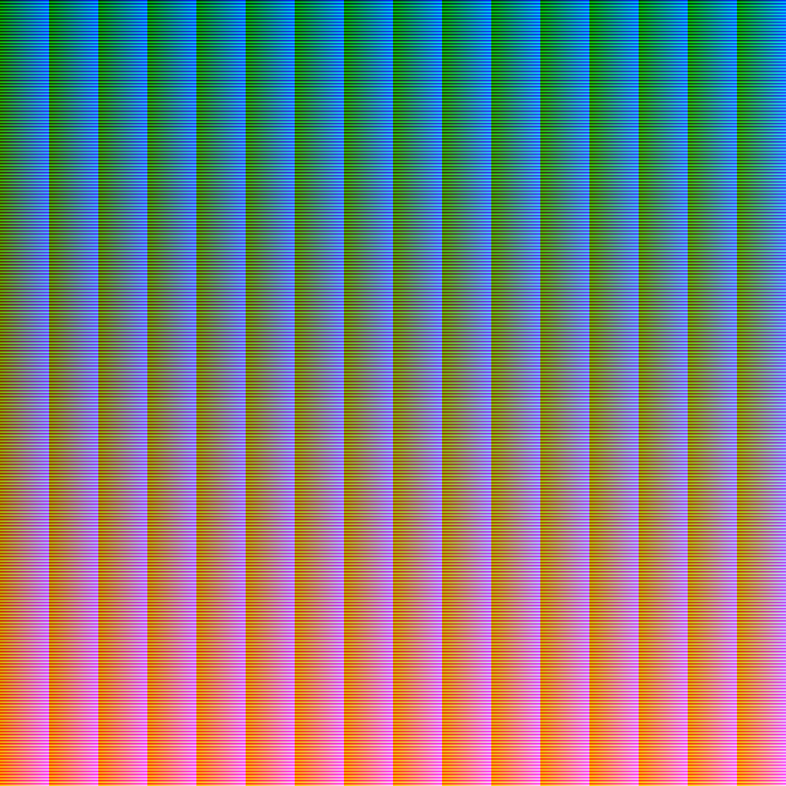
A rendition of Full Color Space Palette (FCSP) generated for this study, compressed for formatting purposes. Each pixel is a unique not present anywhere else in the image.

Faces of the F-150 King Ranch mesh unwrapped onto the FCSP
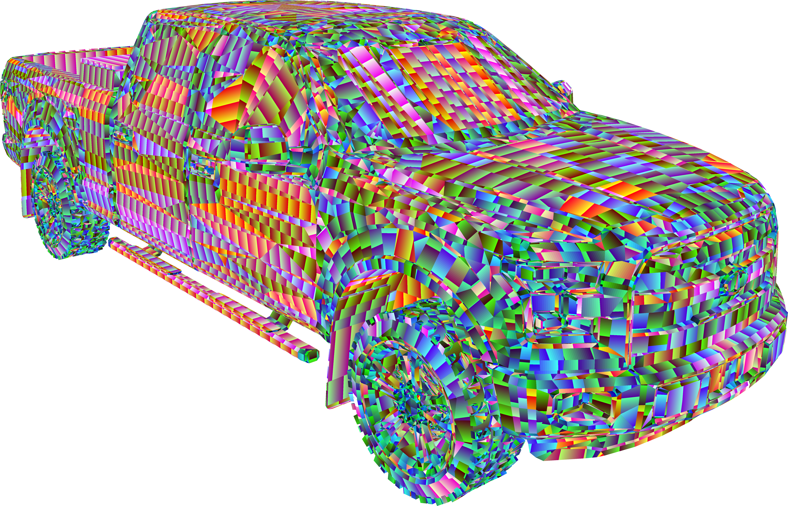
The vehicle model in the 3D engine with the FCSP assigned as its texture.
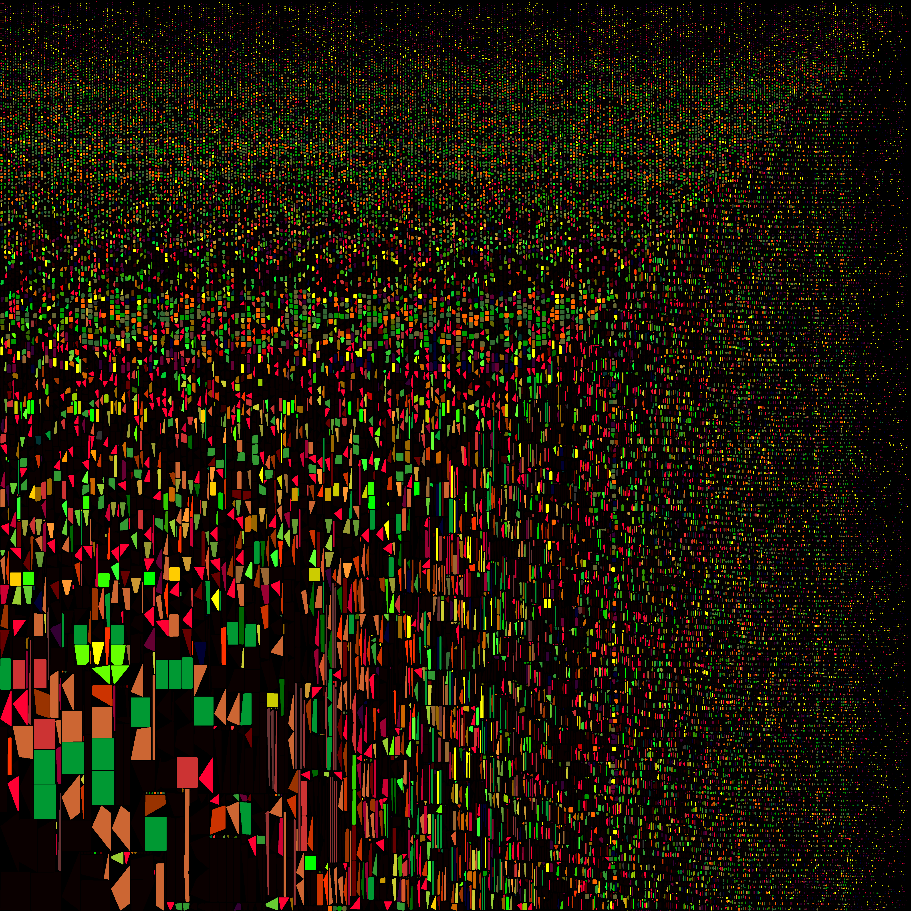
Unwrapped texture of the Ford F-150 King Ranch with each of its exterior elements uniquely colored. Also referred to as the Part Identification Texture (PIdT)
Example of an output plasma gradient texture.
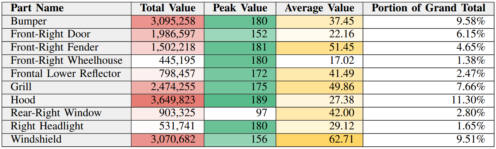
Individual vehicle exterior parts that are among the five with the highest total value, average value, or peak value, for Scenario A where the vehicle is coming from the west.
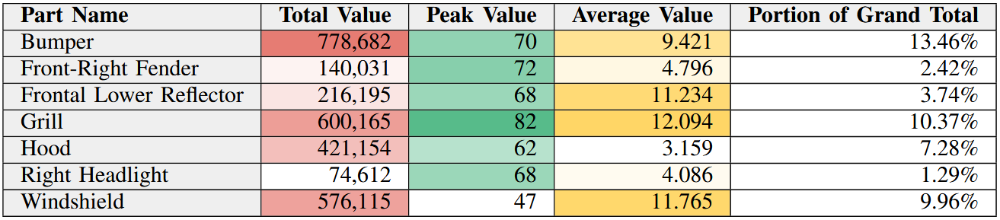
Individual vehicle exterior parts that are among the five with the highest total value, average value, or peak value, for Scenario B where the vehicle is coming from the east.
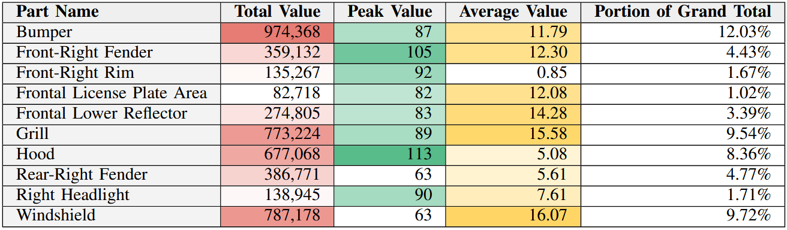
Individual vehicle exterior parts that are among the five with the highest total value, average value, or peak value, for Scenario C where the vehicle is coming from the north.
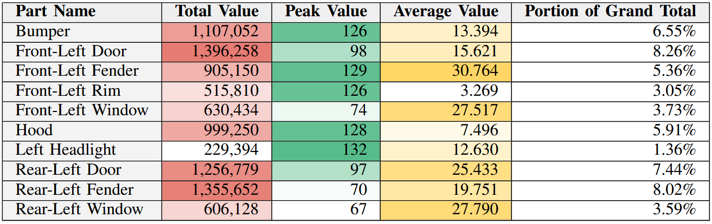
Individual vehicle exterior parts that are among the five with the highest total value, average value, or peak value, for Scenario D where the vehicle is coming from the south.
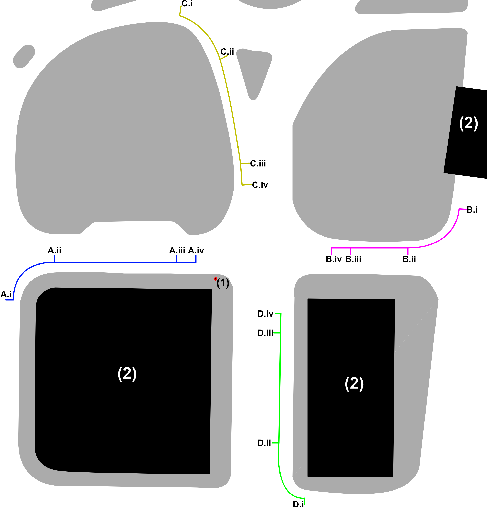
Illustration of the vehicle trajectory at each of the scenarios, as well as the position of the camera (1) and buildings (2). (A) Vehicle approaches from the West; (B) vehicle approaches from the East; (C) vehicle approaches from the North; (D) vehicle approaches from the South. (A-D).i is the vehicle position at the 0:00 timestamp; (A-D).ii is the vehicle position at 1:30; (A-D).iii is the vehicle position at 2:30; (A-D).iv is the vehicle position at 3:00.
.PNG)
Comparison of the environment geometry (top) with its appearance after the unlit material has been applied to it (bottom)

Visualization of a 6,420x8,100 image being divided into twenty-five 1,284x1,620 files before capturing and saving.
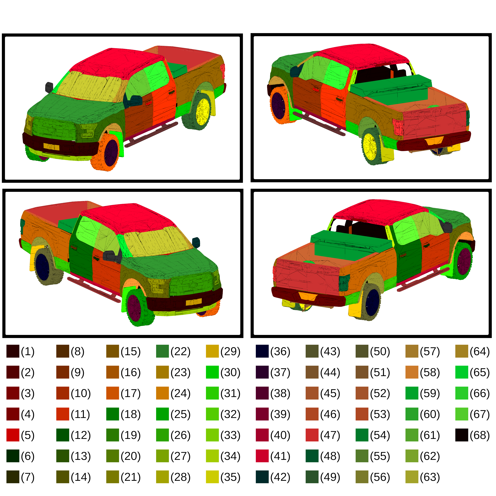
Exterior elements of F150 King Rach uniquely identified by color. (1) Bumper, (2) Bumper Rear, (3) Central Back Light, (4) Cowl Cover, (5) Front-Left Door Handle, (6) Front-Right Door Handle, (7) Rear-Left Door Handle, (8) Rear-Right Door Handle, (9) Front-Left Door, (10) Front-Right Door, (11) Rear-Left Door, (12) Rear-Right Door, (13) Front-Left Fender, (14) Front-Right Fender, (15) Rear-Left Fender, (16) Rear-Right Fender, (17) Front-Left Tire, (18) Front-Right Tire, (19) Grill, (20) Left Headlight, (21) Right Headlight, (22) Hood, (23) License Plate Area Front, (24) License Plate Area Rear, (25) Low Rear-Left Fender, (26) Low Rear-Right Fender, (27) Lower Reflector Front, (28) Rear-Left Mud Flap, (29) Rear-Right Mud Flap, (30) Front-Left Mud Flap, (31) Front-Right Mud Flap, (32) Rear Panel, (33) Rear-Left Panel Rail, (34) Rear-RightPanel Rail, (35) Rear-Left Rim, (36) Rear-Right Rim, (37) Front-Left Rim, (38) Front-Right Rim, (39) Left Rocker Panel, (40) Right Rocker Panel, (41) Roof, (42) Left Side Mirror, (43) Right Side Mirror, (44) Left Step Bar, (45) Right Step Bar, (46) Tailgate, (47) Left Tail Light, (48) Right Tail Light, (49) Rear-Left Tire, (50) Rear-Right Tire, (51) Trailer Hitch, (52) Truck Bed, (53) Truck Bed Rim, (54) Truck Chest, (55) Rear-Left Wheelhouse, (56) Rear-Right Wheelhouse, (57) Front-Left Wheelhouse, (58) Front-Right Wheelhouse, (59) Rear-Left Wheel Hub, (60) Rear-Right Wheel Hub, (61) Front-Left Window, (62) Front-Right Window, (63) Windshield, (64) Left Windshield Rail, (65) Right Windshield Rail, (66) Rear-Left Window, (67) Rear-Right Window, (68) Others
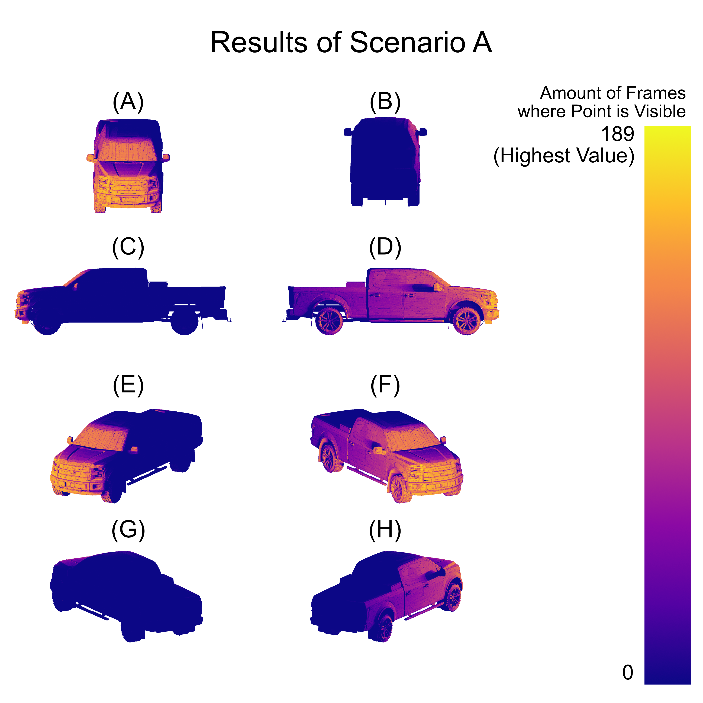
Pictures showing the exposedness of the exterior of the vehicle when it approaches a pedestrian from the left, stopping before a crosswalk. (A) Front, (B) Rear, (C) Left side, (D) Right Side, (E) Front-Left Side, (F) Front-Right Side, (G) Back-Left Side, (H) Back-Right Side.
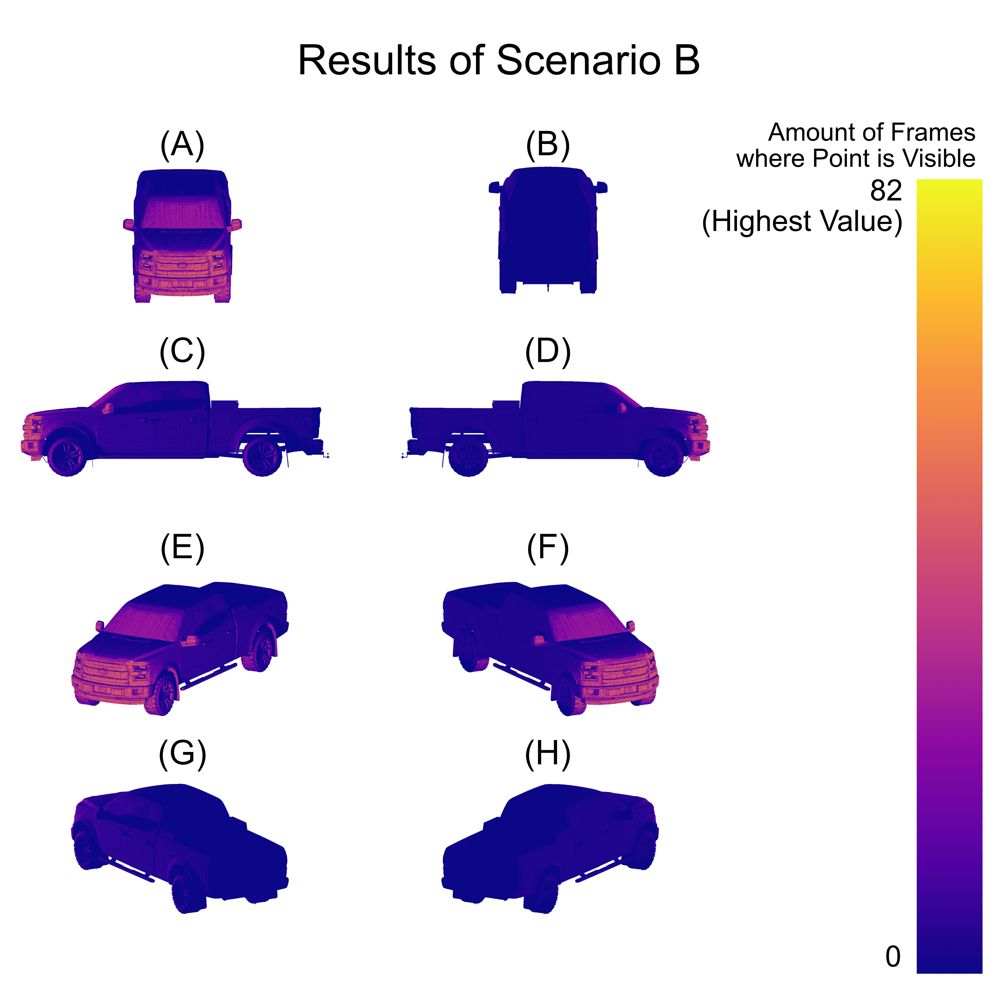
Pictures showing the exposedness of the exterior of the vehicle when it approaches a pedestrian from the right, stopping before a crosswalk. (A) Front, (B) Rear, (C) Left side, (D) Right Side, (E) Front-Left Side, (F) Front-Right Side, (G) Back-Left Side, (H) Back-Right Side.
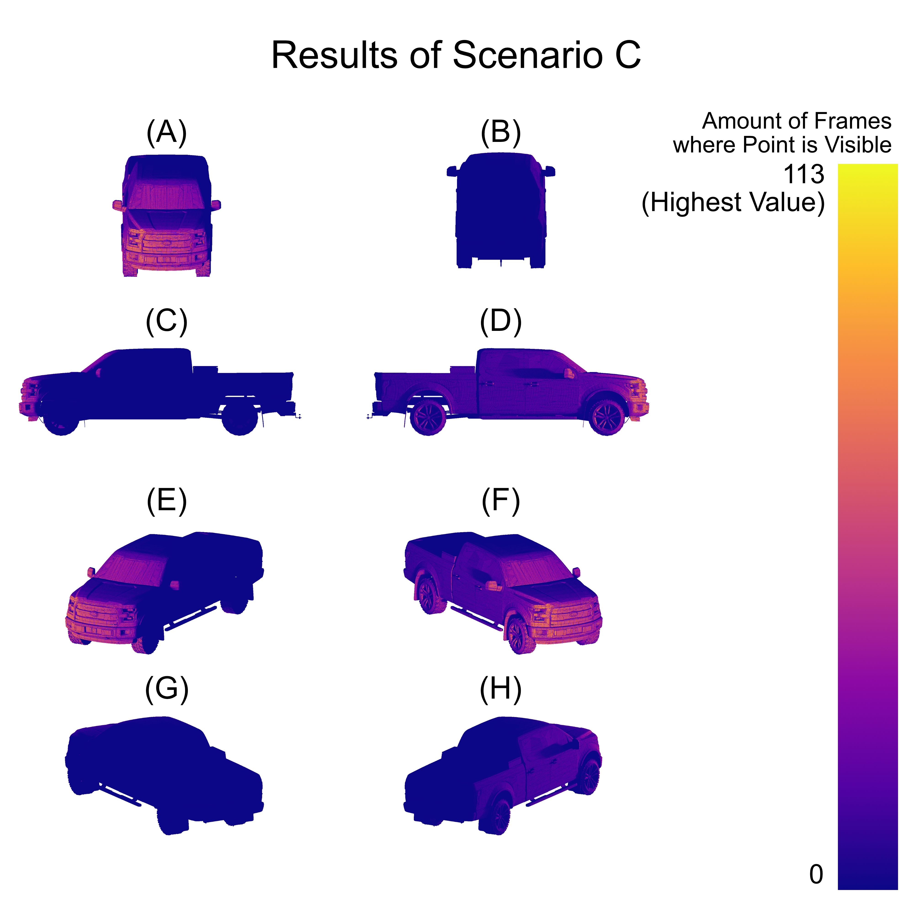
Pictures showing the exposedness of the exterior of the vehicle approaching a pedestrian from the lane farthest from them and from the south. Fig. X. Pictures showing the exposedness of the exterior of the vehicle when it approaches a pedestrian from the left, stopping before a crosswalk. (A) Front, (B) Rear, (C) Left side, (D) Right Side, (E) Front-Left Side, (F) Front-Right Side, (G) Back-Left Side, (H) Back-Right Side.
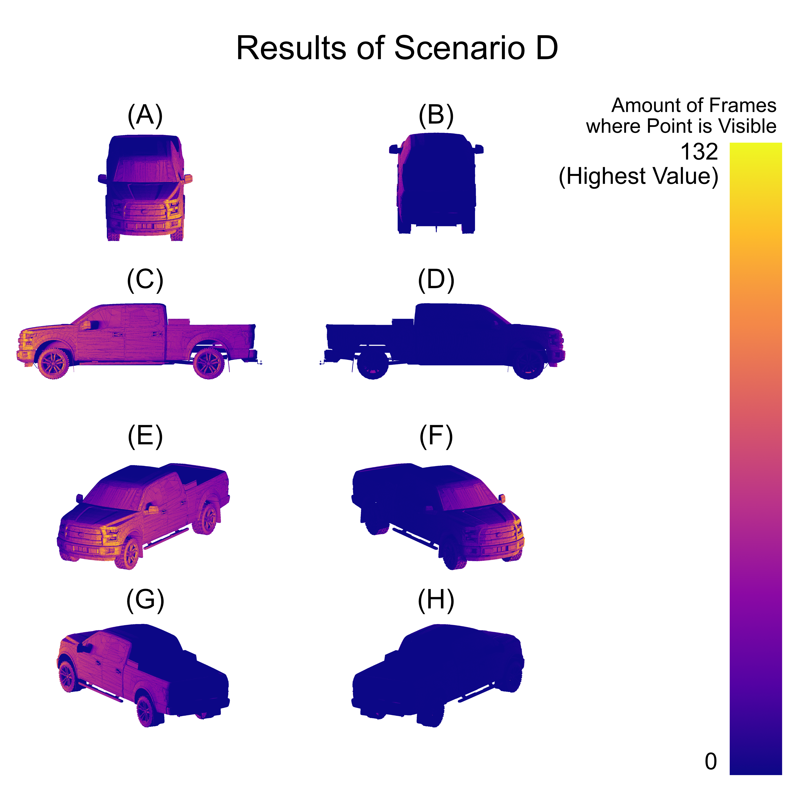